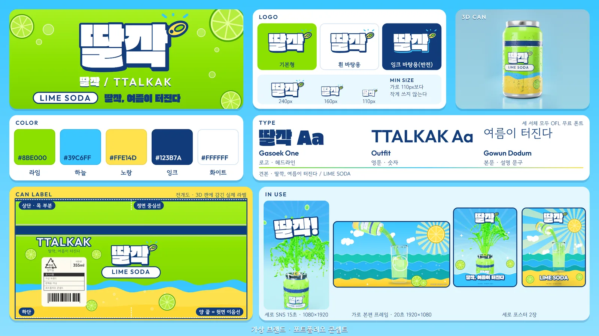

음료·식품3D·모션그래픽 광고SNS 세로 컷키비주얼·포스터상큼·발랄
딸깍, 여름이 터진다
딸깍(TTALKAK) LIME SODA — 가상 브랜드 · 판매용 아님 · 포트폴리오 콘셉트
직접 만든 가상 탄산음료 브랜드 딸깍(TTALKAK) LIME SODA. 3D 캔과 2D 모션그래픽으로 만든 가로 20초 본편, SNS 세로 15초, 세로 포스터 2장, 브랜드 시트까지 한 세트예요.
가로 20초 본편 · 1920×1080 · 30fps · 소리 있음 — 가상 브랜드 · 판매용 아님
20초가로 본편 · 1920×1080 · 30fps
15초세로 SNS · 1080×1920 · 30fps
2장세로 포스터 · 2160×2700
브랜드
이름·로고·색·서체·캔 라벨을 직접 정한 가상 브랜드. 색은 라임·하늘·노랑·잉크·화이트 5색, 서체는 세 종 모두 OFL 무료 폰트.

3D 캔
Blender Cycles로 실물 알루미늄·인쇄 재질을 만들었다. 뒷면 표기는 형태만(바코드 모양, 분리배출 '캔류 알미늄', 355ml) 넣고 성분·칼로리는 넣지 않았다.
조명
반짝임 줄이기 — 림·스트립 조명 40%, 나머지 60%로 낮춰 캔이 번들거리지 않게 맞췄다.
세로 · 포스터
같은 세계관으로 SNS 세로 15초와 세로 포스터 2장을 따로 짰다.
검수
가로 600프레임·세로 450프레임을 전부 점검해 튀는 프레임·암전·과노출 없음을 확인했다. 음량은 가로 −14.3 LUFS, 세로 −14.1 LUFS, 두 영상 모두 디코드 오류 0.
Gallery
갤러리


Drag ↔ / Scroll ↓
Films
세로 SNS 컷
내가 한 일
가상 브랜드 기획3D 캔 재질·조명2D 모션그래픽 합성가로·세로 편집포스터·브랜드 시트
사용한 도구
Blender Cycles
모든 광고는 실제 브랜드와 관계없는 개인 비공식 콘셉트 작품입니다.
NEXT
테크·가전3D·모션그래픽 광고콘티·프리비즈리듬·테크
버튼 하나에, 세상이 바뀐다
Nothing Headphone (1) Pro
롤러를 누르고, 길게 누르고, 돌리고, 패들을 밀 때마다 음악과 화면이 바뀌는 32초 모션그래픽. 재생 버튼으로 시작해 일시정지 버튼으로 끝나요.
케이스 스터디 보기 →